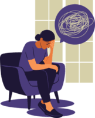

Depression 😔
Depression is a common mental health disorder that affects mood, thoughts, and behavior. It can lead to persistent feelings of sadness, hopelessness, and a loss of interest in daily activities. While it can be challenging, proper treatment and support can help manage symptoms.
What is Depression? 🧠
Depression is a serious mood disorder that affects how a person thinks, feels, and handles daily life. It can cause a loss of interest in activities, fatigue, and difficulty concentrating. It may be mild or severe and require professional treatment.
How Does It Happen? 🤔
Depression can occur due to a combination of genetic, biological, environmental, and psychological factors. Imbalances in brain chemicals (neurotransmitters), traumatic life events, chronic stress, and medical conditions can all contribute to its development.
Symptoms of Depression 🚨
- 😞 Persistent sadness or low mood
- 🚫 Loss of interest or pleasure in activities
- 🥱 Fatigue or low energy
- 🍽️ Changes in appetite and sleep patterns
- 🤯 Difficulty concentrating or making decisions
- 💔 Feelings of guilt, worthlessness, or hopelessness
- 🆘 Thoughts of self-harm or suicide
Common Causes of Depression 🧐
Several factors may contribute to depression, including:
- 🧬 Genetics and family history
- 😢 Major life changes, trauma, or stress
- 🏥 Chronic illnesses or medical conditions
- 🧪 Hormonal imbalances
- 🍷 Substance abuse
- 🚶 Social isolation or lack of support
How to Manage and Treat Depression 💙
Depression can be managed through various treatment options and lifestyle changes:
- 🗣️ Seeking therapy (cognitive behavioral therapy, counseling)
- 💊 Taking prescribed antidepressant medications
- 🏃 Engaging in regular physical activity
- 🧘 Practicing mindfulness and stress management techniques
- 👨👩👧👦 Building a strong support system of friends and family
- 🌙 Maintaining a healthy diet and sleep routine
Prevention and Coping Strategies 🛡️
To reduce the risk of depression or manage symptoms effectively, consider these strategies:
- 👫 Stay socially connected and talk to loved ones
- 🎨 Engage in activities that bring joy and relaxation
- 📆 Maintain a consistent routine and set small, achievable goals
- 🚫 Avoid alcohol and substance abuse
- ⚕️ Seek professional help when needed
When to See a Doctor 🩺
Seek medical attention if you experience:
- 😔 Persistent sadness or hopelessness for more than two weeks
- 🙅 Loss of interest in daily activities
- 🧩 Difficulty concentrating or making decisions
- 😴 Changes in appetite, sleep, or energy levels
- 🚨 Thoughts of self-harm or suicide
Reference:
Depression
Note: Depression is a medical condition, not a sign of weakness. It can be effectively managed with professional help, lifestyle changes, and support from loved ones. However, if your symptoms worsen, you can contact us through our social media channels below or visit your nearest healthcare center.